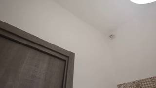
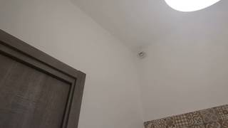
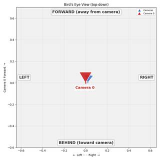

To determine the camera movement between the first and second images, we analyze the positions of static objects in the scene:
- Door Frame: In the first image, the right edge of the brown door frame is positioned roughly in the center of the image. In the second image, this edge has shifted to the left, occupying a smaller portion of the left side of the frame.
- Smoke Detector/Sensor: The small white circular object on the ceiling also shifts to the left when moving from the first image to the second.
- Right-side Elements: In the first image, only a small portion of the light source (top right) and the patterned tiles (bottom right) are visible. In the second image, more of these elements have entered the frame from the right, meaning they have moved leftward across the field of view.
When all objects in a scene shift to the left in the image, it indicates that the camera has moved to the right (translation) or rotated to the right (panning). Comparing the two images, the change in perspective is a consistent shift, which is characteristic of a translation to the right.
Therefore, the camera moved to the right.
A
ReturnAnswer("A")
[ReturnAnswer] Answer submitted: A
Task Analysis
The objective is to determine the specific type of camera motion between two frames: translation (right/left) or panning (right/left).
Coordinate System Resolution:
- Translation Right/Left: Refers to the camera moving along its local X-axis (the axis pointing to the right of the image).
- Pan Right/Left: Refers to the camera rotating around its local Y-axis (the axis pointing "up" relative to the camera sensor, though the world Y is gravity-aligned). A "pan right" means the camera's optical axis rotates toward the right.
This is a 3D spatial reasoning task requiring the distinction between linear motion (translation) and angular motion (rotation).
Information Needs
To distinguish between translation and panning, I need:
- Camera Poses: The 3D position and orientation (extrinsics) of the camera for both frames.
- Trajectory Data: The displacement vector between the two camera centers.
- Rotation Data: The change in the camera's forward-facing vector.
- Visual Evidence of Parallax: Translation causes parallax (objects at different depths move at different speeds in the image), whereas panning causes a uniform rotation of the scene.
Computation Plan
-
3D Reconstruction:
- Call
recon = tools.Reconstruct.Reconstruct(InputImages)using both frames. This provides the camera-to-world (c2w) matrices.
- Call
-
Quantitative Pose Analysis:
- Extract the camera positions:
pos0 = recon.extrinsics[0][:3, 3]andpos1 = recon.extrinsics[1][:3, 3]. - Extract the camera "right" vector for the first frame:
cam_right0 = recon.extrinsics[0][:3, 0]. - Calculate the translation vector:
delta_p = pos1 - pos0. - Compute the projection of the translation onto the right axis:
dist_right = np.dot(delta_p, cam_right0).- If
dist_rightis significantly positive, the camera translated right. - If
dist_rightis significantly negative, the camera translated left.
- If
- Extract the camera "forward" vectors:
fwd0 = recon.extrinsics[0][:3, 2]andfwd1 = recon.extrinsics[1][:3, 2]. - Calculate the angle between
fwd0andfwd1usingtools.Geometry.angle_between_vectors. - Determine the rotation direction: Use the cross product of
fwd0andfwd1relative to the camera's "up" vector to see if it's a pan right or left.
- Extract the camera positions:
-
Visual Trajectory Verification:
- Render a BEV plot:
recon.render_bev(ego_trajectory=True). - Inspect the green/yellow dashed line. A clear line indicates translation; a point with a change in orientation indicates a pan.
- Render a BEV plot:
-
Visual Reasoner Cross-Check:
- Call
vlm.ask_with_thinking([InputImages[0], InputImages[1]], "Analyze the motion from the first image to the second. Does the scene exhibit parallax (objects shifting relative to each other based on depth), which indicates translation, or does it look like a rotation around a fixed point, which indicates panning? Based on this, did the camera move right, left, pan right, or pan left?").
- Call
-
Synthesis:
- Compare the magnitude of translation ($|delta_p|$) against the magnitude of rotation.
- If translation dominates and
dist_right > 0$\rightarrow$ Translate Right. - If translation dominates and
dist_right < 0$\rightarrow$ Translate Left. - If rotation dominates and it's a clockwise rotation around the Y-axis (from top view) $\rightarrow$ Pan Right.
- If rotation dominates and it's a counter-clockwise rotation around the Y-axis (from top view) $\rightarrow$ Pan Left.
CHECKLIST
[
{"priority": "HIGH", "description": "Verify if the reconstruction succeeded and the camera poses are physically plausible"},
{"priority": "HIGH", "description": "Distinguish between translation and rotation by comparing the magnitude of position change vs orientation change"},
{"priority": "MEDIUM", "description": "Use BEV trajectory to visually confirm the direction of movement"},
{"priority": "MEDIUM", "description": "Cross-validate the geometric result with the VLM's analysis of parallax"}
]
Fallbacks
- Reconstruction Failure: If the images have too little overlap for
tools.Reconstruct, I will rely entirely onvlm.ask_with_thinkingto identify parallax. Parallax is the definitive visual cue for translation over panning. - Ambiguous Motion: If both translation and rotation occur, I will determine which component is dominant in terms of the resulting image shift.
{ "tool": "tools.Reconstruct.Reconstruct", "args": { "frames": "InputImages" } }
=== Step 0 Execution Feedback === [SUCCESS] Code executed in 27.63s. [Variables] New/changed: result_0: Reconstruction, frames=[0, 1] [Tool Calls] 1 tool/VLM call(s) this step.
{ "tool": "tools.Geometry.euclidean_distance", "args": { "p1": "result_0.extrinsics[0][:3, 3]", "p2": "result_0.extrinsics[1][:3, 3]" } }
=== Step 1 Execution Feedback === [SUCCESS] Code executed in 0.00s. [Variables] New/changed: result_1: float [Tool Calls] 1 tool/VLM call(s) this step.
=== Step 2 Execution Feedback === [ERROR] Skipped: LLM response was not in the required format.
{ "tool": "show", "args": { "image": "result_0.render_bev(ego_trajectory=True)" } }
[image: show_0001]

=== Step 3 Execution Feedback === [SUCCESS] Code executed in 0.17s. [Variables] New/changed: result_3: NoneType [Inline Images] 1 image(s) attached below. Labels: result_0.render_bev(ego_trajectory=True) [show() budget] 249/250 images remaining.
=== Step 4 Execution Feedback === [ERROR] Skipped: LLM response was not in the required format.
{ "tool": "ReturnAnswer", "args": { "answer": "A" } }
[ReturnAnswer] Answer submitted: A
🛠️ Decided to use 2 tool(s)
[ { "name": "vlm__detect_one", "arguments": { "image_index": 0, "obj_name": "smoke detector" } }, { "name": "vlm__detect_one", "arguments": { "image_index": 1, "obj_name": "smoke detector" } } ]
⚡ Executing vlm__detect_one...
{ "image_index": 0, "obj_name": "smoke detector" }
✅ vlm__detect_one completed (with generated image)
⚡ Executing vlm__detect_one...
{ "image_index": 1, "obj_name": "smoke detector" }
✅ vlm__detect_one completed (with generated image)
🧠 Synthesizing results from 2 tool(s)...
B
B
B
Task Analysis
The goal is to determine the camera's movement between two consecutive frames. The options are translation (right or left) or panning (left or right).
Coordinate System Resolution:
- Translate Right: The camera's 3D position moves in the direction of its own local X-axis (right).
- Translate Left: The camera's 3D position moves in the opposite direction of its local X-axis.
- Pan Left: The camera rotates around its local Y-axis (yaw) to look toward its left.
- Pan Right: The camera rotates around its local Y-axis (yaw) to look toward its right.
This is a 3D spatial reasoning task requiring the analysis of the camera's extrinsic parameters (pose) and visual verification of the scene's motion.
Information Needs
- Camera Poses: The 4x4 camera-to-world matrices for both frames are needed to calculate the relative transformation.
- Relative Transformation: The translation vector and rotation matrix between the two poses in the camera's local coordinate system.
- Visual Evidence: Side-by-side images and a BEV trajectory plot to confirm whether the movement is a translation (characterized by parallax) or a pan (characterized by rotation around a point).
Computation Plan
- 3D Reconstruction: Perform reconstruction on the two frames to extract camera extrinsics.
recon = tools.Reconstruct.Reconstruct(InputImages) - Pose Extraction: Get the camera-to-world matrices for the first and second frames.
pose0 = recon.extrinsics[recon.frame_indices[0]]pose1 = recon.extrinsics[recon.frame_indices[1]] - Relative Motion Calculation: Compute the relative transformation $T_{rel} = T_0^{-1} \cdot T_1$.
- The translation component $t_{rel} = [x, y, z]$ describes the movement of the camera in its local frame at $t=0$.
- The rotation component $R_{rel}$ describes the change in orientation.
- Quantitative Analysis:
- Translation: Check the magnitude of $t_{rel}$. If $|x|$ is dominant and significantly larger than the rotation effect:
- $x > 0 \rightarrow$ Translate Right.
- $x < 0 \rightarrow$ Translate Left.
- Rotation (Panning): If the rotation around the local Y-axis is dominant and translation is minimal:
- Determine the direction of rotation (Yaw). A rotation that turns the camera's forward vector towards its local right is a Pan Right; towards local left is a Pan Left.
- Translation: Check the magnitude of $t_{rel}$. If $|x|$ is dominant and significantly larger than the rotation effect:
- Visual Verification:
show(InputImages[0], InputImages[1]): Inspect the images. Translation causes parallax (objects at different depths move at different speeds), while panning causes a more uniform shift of the scene.recon.render_bev(ego_trajectory=True): Visualize the camera's path in the world frame to see if it is a straight line (translation) or a pivot (rotation).vlm.ask_with_thinking([InputImages[0], InputImages[1]], "Describe the camera movement between these two images. Did the camera shift its position sideways, or did it stay in place and rotate its view?")
Verification Checklist
[
{"priority": "HIGH", "description": "Verify that the relative translation vector x-component matches the visual shift in the images."},
{"priority": "HIGH", "description": "Distinguish between translation and panning by checking for parallax in the visual evidence."},
{"priority": "MEDIUM", "description": "Ensure the correct frame indices are used for the relative pose calculation."},
{"priority": "MEDIUM", "description": "Cross-check the geometric result with the VLM's qualitative description of the motion."}
]
Fallbacks
- Reconstruction Failure: If
tools.Reconstructfails due to insufficient overlap or motion, I will rely onvlm.ask_with_thinkingand a manual analysis of feature point movement (usingvlm.locateon static objects in both frames to see if they move consistently with a pan or translation). - Ambiguous Motion: If both translation and rotation are present, I will determine which component is dominant in terms of magnitude (meters vs. degrees) relative to typical camera movements.
# Perform 3D reconstruction on all available frames recon = tools.Reconstruct.Reconstruct(InputImages) # Display the two images for visual reference show([InputImages[0], InputImages[1]]) # Print basic reconstruction info print(f"Reconstructed frames: {recon.frame_indices}") print(f"Metric scale: {recon.metric_scale}")
[image: show_0001] Reconstructed frames: [0, 1] Metric scale: 1.0730397701263428

=== Step 0 Execution Feedback === [SUCCESS] Code executed in 5.11s. [Output] Reconstructed frames: [0, 1] Metric scale: 1.0730397701263428 [Variables] New/changed: recon: Reconstruction, frames=[0, 1] [Inline Images] 2 image(s) attached below. Labels: [InputImages[0], InputImages[1]] [Tool Calls] 1 tool/VLM call(s) this step. [show() budget] 248/250 images remaining.
import numpy as np # Get absolute frame indices fi0 = recon.frame_indices[0] fi1 = recon.frame_indices[1] # Get camera-to-world matrices pose0 = recon.extrinsics[fi0] pose1 = recon.extrinsics[fi1] # Calculate relative transformation: T_rel = T0_inv * T1 # T_rel represents the movement of camera 1 relative to camera 0, in camera 0's local frame. pose0_inv = np.linalg.inv(pose0) t_rel_mat = pose0_inv @ pose1 # Extract translation vector t_rel = t_rel_mat[:3, 3] print(f"Relative translation (x, y, z) in meters: {t_rel}") # Extract rotation matrix r_rel = t_rel_mat[:3, :3] # Calculate the angle of rotation (yaw) around the local Y-axis (down vector) # In OpenCV/Reconstruct convention: Y is down. # A pan right is a positive rotation around Y (looking right). # The rotation angle can be found from the trace of the rotation matrix or specific elements. # For a pure yaw (rotation around Y), R[0,0] = cos(theta), R[0,2] = sin(theta), R[2,0] = -sin(theta), R[2,2] = cos(theta) yaw = np.arctan2(r_rel[0, 2], r_rel[2, 2]) yaw_deg = np.degrees(yaw) print(f"Relative yaw (rotation around local Y) in degrees: {yaw_deg}") # Visual verification: BEV trajectory show(recon.render_bev(ego_trajectory=True))
Relative translation (x, y, z) in meters: [0.02013801 0.00985252 0.00288236] Relative yaw (rotation around local Y) in degrees: 7.973368881007472 [image: show_0002]

=== Step 1 Execution Feedback === [SUCCESS] Code executed in 0.24s. [Output] Relative translation (x, y, z) in meters: [0.02013801 0.00985252 0.00288236] Relative yaw (rotation around local Y) in degrees: 7.973368881007472 [Variables] New/changed: fi0: int fi1: int pose0: ndarray, shape=(4, 4), dtype=float64 pose1: ndarray, shape=(4, 4), dtype=float64 pose0_inv: ndarray, shape=(4, 4), dtype=float64 t_rel_mat: ndarray, shape=(4, 4), dtype=float64 t_rel: ndarray, shape=(3,), dtype=float64 r_rel: ndarray, shape=(3, 3), dtype=float64 yaw: float64, shape=(), dtype=float64 yaw_deg: float64, shape=(), dtype=float64 [Inline Images] 1 image(s) attached below. Labels: recon.render_bev(ego_trajectory=True) [show() budget] 247/250 images remaining.
ReturnAnswer("D")
[ReturnAnswer] Answer submitted: D